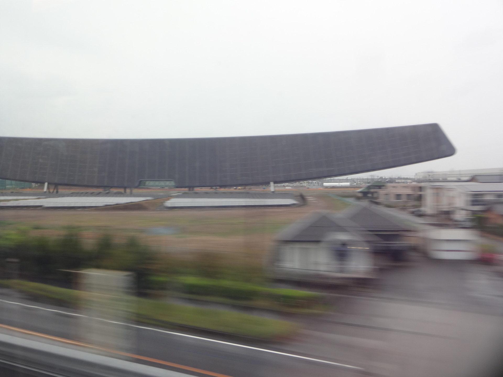
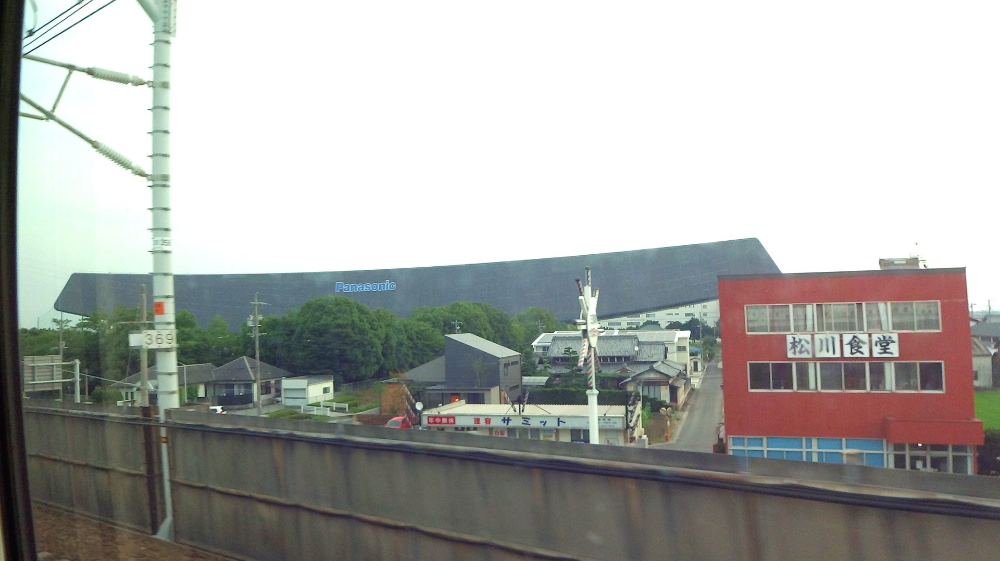
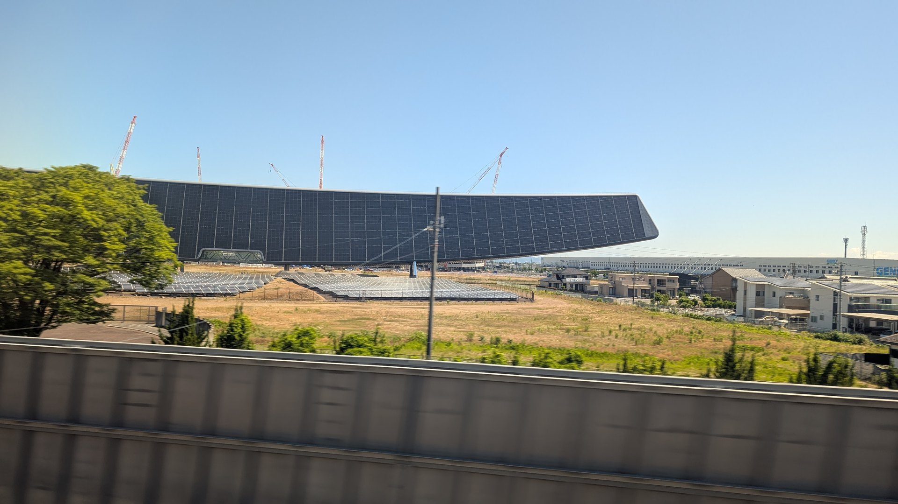

TOKAIDO SHINKANSEN WINDOW VIEW
Can you see Solar Ark from the Shinkansen?
A giant solar ship, out of nowhere.

- Section
- Nagoya → Gifu-Hashima
- Seat side
- Seat E · mountain side
- Timing
- About 103 minutes after leaving Tokyo on a Nozomi train
- Photos
- 4 photos
How to find Solar Ark
After Nagoya and Kiyosu Castle, as the train approaches Gifu-Hashima, the Solar Ark sweeps into view on the Seat E side: a huge dark arc beside the line. It is not a usual guidebook landmark, but it is exactly the kind of strange window-seat find that sticks in memory.
If you are traveling from Tokyo toward Shin-Osaka, start watching the Seat E · mountain side window as you approach Nagoya → Gifu-Hashima. If you are traveling toward Tokyo, the order is reversed.
Why this view matters
Solar Ark is one of the window views that make the Tokaido Shinkansen more than a transfer. The train moves fast, so visibility depends on weather, seat position, and timing.
Solar Ark in photos

